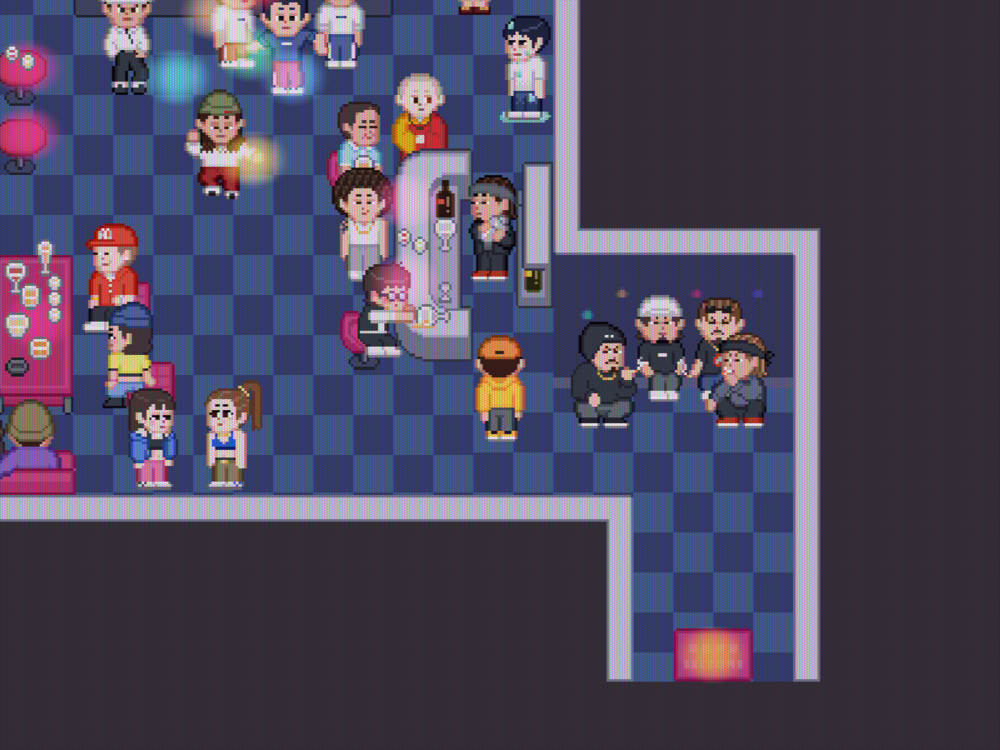
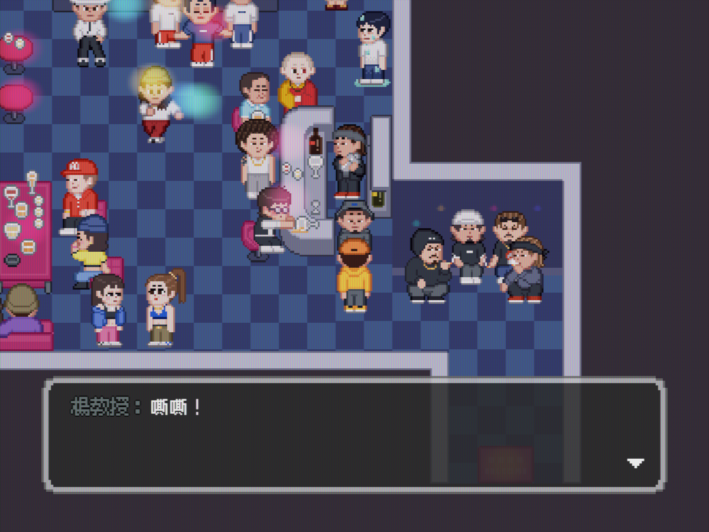

原版程式核對・2026.09.07
沒讓 GorDoN 變身，
他會出現在夜店嗎？
不會。在這份原版中，沒輸入「嘶」完成變身，夜店就不會建立 GorDoN，學生服版本也不會出現，因此沒有可觸發的夜店台詞。
原檔確實留有學生版對話，但「資料有定義」和「遊戲中能遇到」是兩件事。No.275 是原檔保留的學生代號，不是漏截了一段可以正常遊玩的分支。
同一位置，兩種狀態
{kind=link}

{kind=link}

兩張均由隔離的原版引擎重建第 10 章夜店交談配置，使用相同主角位置及鏡頭。沒有插入學生 NPC；教授圖用原版對話框呈現原文。其他 NPC 的隨機動畫可能不同。這是場景狀態驗證，不是從新遊戲一路通關的錄影。
三種夜店配置都核對過
| 夜店配置 | 未完成變身 | 已完成變身 |
|---|---|---|
| 一般配置 normal | 不出現 | 不出現 |
| 第 10 章交談 talking | 不出現，沒有對話 | 楊教授，No.274 |
| 聽歌配置 listening | 不出現 | 楊教授在聽歌位置 |
第 10 章且已有 old_man_skateboarding 才使用交談配置。另核對了第 11／12 章一般配置，總計 10 組。聽歌列只表示人物是否生成，不宣稱播放歌曲中可自由觸發這段交談。
夜店另外的 student_1、student_2、student_3 是不同 NPC，不能把他們當成學生服 GorDoN。
為什麼會有學生版台詞？
原始函式用同一個 GorDoN 旗標選擇教授／學生版。然而夜店建立人物時已要求這個旗標成立；沒有旗標，就連人物都不存在，函式會先返回，因此走不到學生版。這份程式沒有說明為何保留此分支，不能直接斷定是作者刻意隱藏或某種遊戲解法。
查看程式判斷摘要
// 以下為依原始方法整理的可讀摘要，不是遊戲修改。
setFinalAnswer(answer):
answer === "嘶" → triggerGorDoNHenshin()
變身與離場完成 → triggeredEvents.add("GorDoN")
setCharacterNpcs / ensureListeningStateNpcs:
有 "GorDoN" 旗標 → 才建立 GorDoN
triggerGorDoNTalk:
人物不存在 → return
有旗標 → GorDoN_nightclub_up
無旗標 → GorDoN_student_nightclub_up // 正常生成流程到不了
人物貼圖初始化:
有旗標 → 教授 alpha=1、學生 alpha=0原檔保留的學生版六句台詞
以下是資料內容，不代表能在原版夜店觸發。文字和教授版逐句相同，只差說話者標記。
- 學生版 GorDoN：嘶嘶！
- SL：嘶！
- 學生版 GorDoN：啊你自己來喔？
- SL：對啊...不然？
- 學生版 GorDoN：哈...我有問Gina要不要來！
- SL：那......這個晚上只好各自social...
查證來源與範圍
依使用者提供的原始遊戲 accelerated_portable_v2/resources/app.asar.original，核對 dist/assets/index-BbZAngKC.js。結論適用這份版本；不推定其他更新版也完全相同。
原始 ASAR SHA-256：44d4d25857a4c5f57643846ea4a81bb0e144ffaa780c7fbf08b5abcecc40f1ef